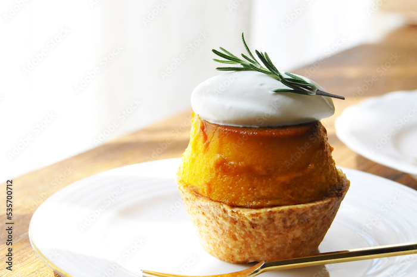
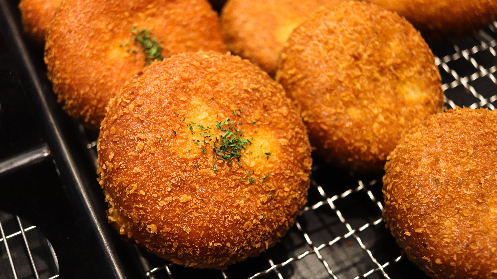
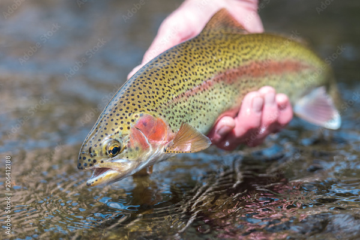
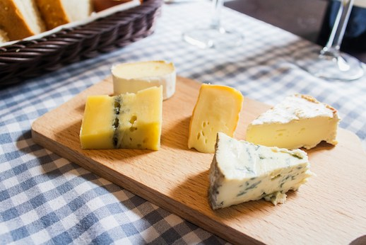
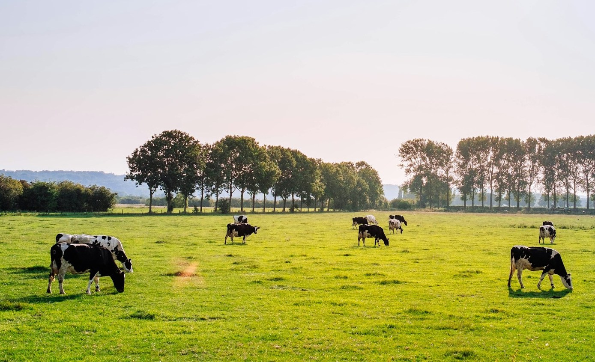
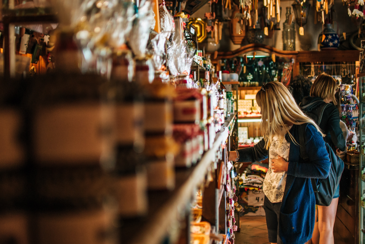

北の恵みを
味わう
四方を山々に囲まれ、豊かな伏流水に恵まれた弥石町は、まさに「北の食糧基地」です。
弥石町特産「くりかぼちゃ」をはじめとする野菜の旨みを、寒暖差の激しい気候が凝縮させ、四季折々の旬の味覚が食卓を彩ります。
また、広大な牧草地でのびのびと育った弥石牛から搾られる生乳は、濃厚でコクのあるチーズやバターへと姿を変え、町の誇る特産品となっています。
町役場観光部が厳選してお届けするこれらの逸品は、生産者の情熱と弥石の自然が織りなす、ここでしか出会えないご馳走です。
-
大地の甘みを凝縮した
くりかぼちゃ
弥石町を代表する特産品「くりかぼちゃ」。昼夜の激しい寒暖差が、高い糖度とホクホクとした食感を生み出します。
そのポテンシャルを最大限に活かしたスイーツや、地元の家庭で愛される郷土料理など、ひと口ごとに弥石の大地の豊かさを実感できます。 -
原産キタアカリの逸品

黄金色の果肉と強い甘みが特徴のじゃがいもです。
道の駅『サウレカムイ』の名物である揚げたてのコロッケは、イモ本来の濃厚な味わいが口いっぱいに広がる、弥石町を訪れたら外せない「歩き食べ」の定番です。 -
清流が育む魚

山々から流れ出す冷たく澄んだ伏流水を利用し、チョウザメやイトウなどの希少な淡水魚が育まれています。
地元レストランで提供される新鮮な魚肉や、宝石のように輝く魚卵は、弥石町でしか味わえない最高級のグルメ体験をお約束。 -
恵みの乳製品

広大な牧草地でストレスフリーに育った弥石牛、そして希少な弥石羊。
その良質な生乳から作られるチーズやバターは、濃厚なコクと爽やかな後味が特徴です。
そのままはもちろん、ワインとの相性も抜群の逸品です。
関連施設・体験等
-

くりかぼちゃスイーツ教室
弥石町特産の甘いくりかぼちゃを使用して、素材の味を活かした絶品スイーツ作りに挑戦します。
-

アイヌ料理体験
季節の旬で献立が変わる伝統料理体験。訪れるたび新しい「弥石の味」に出会えます。
-

弥石町特産野菜収穫体験
雄大な大地が育んだ旬の野菜を自分の手で収穫！獲れたてならではの香りと甘みに感動してください。
-
道の駅『サウレカムイ』
弥石の旬が揃う場所。特産の山菜や海産物を堪能できるほか、アイヌ工芸品も豊富に並びます。
-

乳しぼり&チーズ作り体験
酪農の町で命の恵みを体感。新鮮な生乳から自分だけのチーズを作る、贅沢なひとときを！
-

山谷商店
伝統の刺繍衣装や工芸品が並ぶ老舗。弥石町の文化を暮らしに彩る逸品に出会える店。